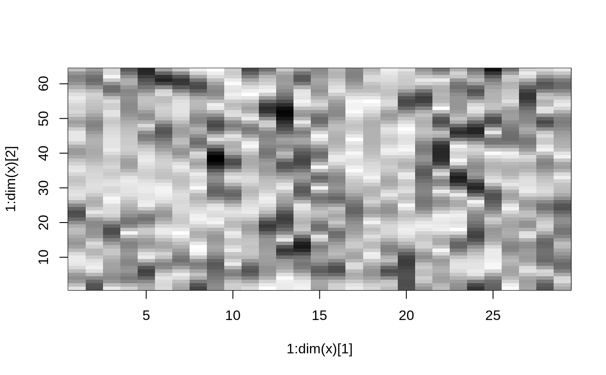

stft.RdThis function computes the Short Time Fourier Transform
of a given vector X.
First, time-slices of length win are
extracted from the vector. The shift of one time-slice to the next one is
given by inc. The values of these time-slices are smoothed by
mulitplying them with a window function specified in wtype. For
the thus obtained windows, the Fast Fourier Transform is computed.
stft(X, win=min(80,floor(length(X)/10)), inc=min(24, floor(length(X)/30)), coef=64, wtype="hanning.window")
| X | The vector from which the stft is computed. |
|---|---|
| win | Length of the window. For long vectors the default window size is 80, for short vectors the window size is chosen so that 10 windows fit in the vector. |
| inc | Increment by which the window is shifted. For long vectors the default increment is 24, for short vectors the increment is chosen so that 30 increments fit in the vector. |
| coef | Number of Fourier coefficients |
| wtype | Type of window used |
Object of type stft. Contains the values of the stft and information about the parameters.
A matrix containing the results of the stft. Each row of
the matrix contains the coef Fourier coefficients of one
window.
The value of the parameter win
The value of the parameter inc
The value of the parameter wtype
plot.stft
